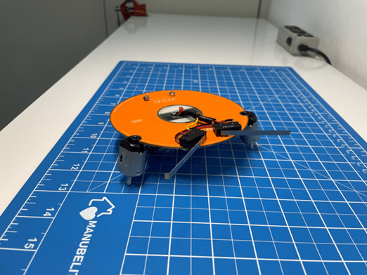
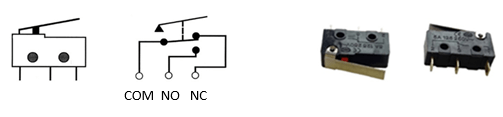
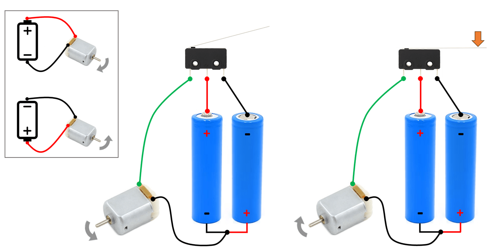
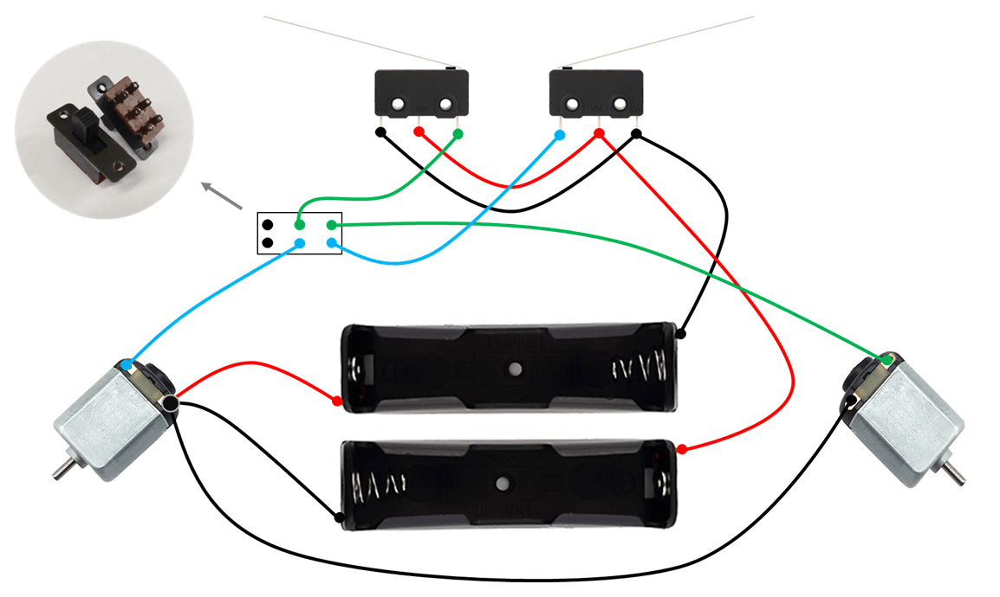
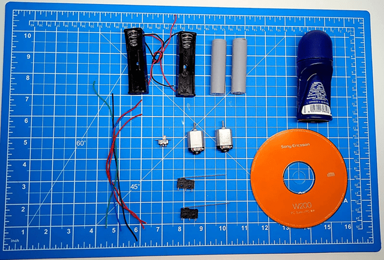
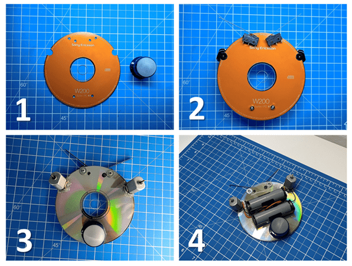

Robô BUG
Neste projeto, vou mostrar que o lixo eletrônico pode ganhar uma segunda vida cheia de movimento! O Robô BUG nasce sobre uma base de CD-ROM, com motores, fios e microswitches (chaves de fim de curso) reaproveitados de brinquedos, impressoras e outros eletrônicos aposentados. Sem programação, sem mistério, só criatividade e eletrônica raiz. Você vai aprender como um simples circuito faz o robô pensar que é um inseto e desviar de obstáculos como um mestre da gambiarra eletrônica. Prepare o ferro de solda e o bom humor, porque aqui o bug é o herói da história! 🪲⚡

Parte 1 - Controle de motor DC com chaves fim de curso
Aqui está o cérebro do robô! Você vai descobrir como duas simples chaves fim de curso controlam os motores DC. Quando o BUG esbarra em um obstáculo, uma das chaves “avisa” o motor para mudar o sentido, e o robô faz uma manobra digna de um inseto esperto tentando escapar da vassoura!
Chave fim de curso
A chave fim de curso é um botão mecânico muito sensível que consegue abrir ou fechar um circuito quando algo encosta nela.
Ela possui três pinos:
- COM (comum): pino principal, por onde a corrente entra ou sai.
- NO (normalmente aberto): conecta-se ao COM apenas quando a chave é pressionada.
- NC (normalmente fechado): está sempre conectado ao COM, mas se abre quando a chave é pressionada.
Controle do sentido de um motor DC
Um motor DC gira em um sentido ou em outro dependendo da direção da corrente elétrica. Se a corrente vai de um lado para o outro, ele gira para frente e se você inverte a corrente, ele gira para trás. É assim que podemos usar a chave fim de curso para controlar a direção do motor apenas mudando a polaridade da tensão.
Lógica principal
No robô BUG, as “antenas” são hastes ligadas às suas respectivas chaves fim de curso, funcionando assim:
- O robô anda sempre pra frente com os dois motores ligados às pilhas.
- Se a antena direita encosta em um obstáculo, ela pressiona a chave fim de curso correspondente. Essa chave inverte a corrente do motor esquerdo, fazendo-o girar para trás.
- Com o motor esquerdo indo pra trás e o direito pra frente, o robo gira para a esquerda, desviando do obstáculo.
- O mesmo acontece com a antena esquerda: ao bater, a chave inverte o motor direito, e o robo gira para a direita.
- Dessa forma, cada chave fim de curso age como um “detector mecânico” que decide qual motor inverter, permitindo que o robo desvie dos obstáculos automaticamente.
Diagrama elétrico do robô
Parte 2 - Lista de materiais
Tudo que você precisa pode estar guardado no fundo da gaveta ou esperando uma segunda chance na caixa de sucata!
Separe:
- 1 CD-ROM
- 1 tubo vazio de desodorante roll-on
- 2 motores DC 3 a 6 V
- 2 chaves fim de curso (microswitches)
- suporte para uma bateria de íon de lítio (2 peças)
- 2 Baterias íon de lítio de 3.7 V
- Chave HH 6 terminais e 2 posições (Ligar/Desligar o robô)
- Fios, parafusos, fita isolante, fita dupla face e cola quente
Observações:
Os motores podem vir de carrinhos de brinquedo, as chaves fim de curso de impressoras e as baterias podem ser substituídas por pilhas AA ou AAA (neste caso, use dois suportes com duas pilhas cada). A chave HH também pode ser obtida de fontes antigas.

Parte 3 - Montagem
Agora é hora de colocar a mão na massa!
- Comece furando o CD e cortando o tubo de desodorante roll-on.
- Instale as chaves fim de curso na frente como se fossem as antenas do inseto.
- Fixe os motores e a parte cortada do tubo de desodorante.
- Fixe os suportes de bateria e a chave HH.

⚡Por fim, solde os fios conforme o diagrama elétrico do projeto.
▶️ Como usar um ferro de solda
Teste, ajuste e veja seu robô ganhar vida — ou melhor, movimento! Se tudo der certo, o Robô BUG vai sair andando por aí, desviando de obstáculos como quem está fugindo da faxina!